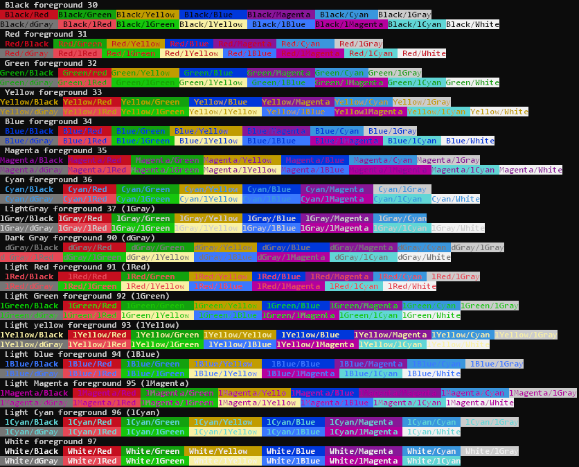

ANSI colors are available by default in Windows version 1909 or newer. See below for older versions.
Specify the color codes in a batch file by ECHOing the foreground and/or background color codes (from the following table) followed by the text to be formatted, followed by the ANSI default (Esc[0m) to reset the terminal back to the default colors.
These codes are identical to those used in a Unix/Linux/VT 100 terminal though the colors may be slightly different shades.
Color Foreground Background COLOR equivalent Black BLACK █ Esc[30m Esc[40m 0 Red DARK_RED █ Esc[31m Esc[41m 4 Green DARK_GREEN █ Esc[32m Esc[42m 2 Yellow DARK_YELLOW █ Esc[33m Esc[43m 6 Blue DARK_BLUE █ Esc[34m Esc[44m 1 Magenta DARK_MAGENTA █ Esc[35m Esc[45m 5 Cyan DARK_CYAN █ Esc[36m Esc[46m 3 Light gray DARK_WHITE █ Esc[37m Esc[47m 7 Dark gray BRIGHT_BLACK █ Esc[90m Esc[100m 8 Light red BRIGHT_RED █ Esc[91m Esc[101m C Light green BRIGHT_GREEN █ Esc[92m Esc[102m A Light yellow BRIGHT_YELLOW █ Esc[93m Esc[103m E Light blue BRIGHT_BLUE █ Esc[94m Esc[104m 9 Light magenta BRIGHT_MAGENTA █ Esc[95m Esc[105m D Light cyan BRIGHT_CYAN █ Esc[96m Esc[106m B White WHITE █ Esc[97m Esc[107m F Bold Esc[1m Underline Esc[4m No underline Esc[24m Reverse text Esc[7m Positive text (not reversed) Esc[27m Default Esc[0m The Esc character in the above table must be entered with the key combination Ctrl+[
In some text editors this will appear as ^[ or Esc[
Many basic text editors do not provide a method of entering an ANSI Esc character (n.b. do not confuse this with the CMD Escape character) either enter Esc at the command line or use an editor like Notepad++ which allows copy and paste.
The actual colors displayed are dependent on the Terminal color scheme which can be set using ColorTool.exe The new default color scheme is called campbell.ini. This was first introduced in Windows 10 clean-install version build 16257 (1709).
The color swatches on this page are based on the new COLOR defaults.
ANSI color codes do also support redirection to a text file. You may then use TYPE to display such an output file complete with colors. However if you want to easily access the raw text without any color codes e.g. for further manipulation/sorting then avoid applying any color codes until after that has been done.
To use ANSI colours in the Windows terminal requires setting VirtualTerminalLevel.
VirtualTerminalLevel = 1 is now set by default for the terminal and in ConPTY.
In Windows versions 1511 through to 1903 this had to be enabled in the registry at:[HKEY_CURRENT_USER\Console]
"VirtualTerminalLevel"=dword:00000001Alternatively it can be enabled by calling the SetConsoleMode API with the ENABLE_VIRTUAL_TERMINAL_PROCESSING flag.
Examples
@Echo off
Echo ¤[91m This text will display in Red
¤[0m
In the above ¤ represents the Esc character.
A batch file to display all the possible ANSI colors: EchoANSI.CMD
Output:

“In nature, light creates the color; in the picture, color creates light.
Every color shade emanates a very characteristic light — no substitute is possible” ~ Hans Hofmann
Related:
ECHO - Display a message on screen.
TYPE - Display the contents of a text file.
In MS-DOS ANSI support could be installed by loading ansi.sys at startup.
ConPTY - Blog post describing the Windows Pseudo Console.
Console Virtual Terminal Sequences - Full list of VT 100 codes, positioning, colors, modes, RGB (for non Windows consoles)